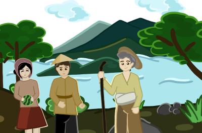
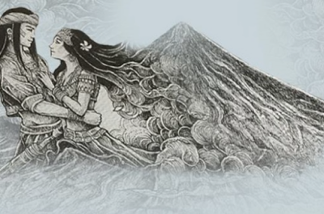

Legend of Lakan Taal
Taal Volcano's appeal is an ethereal aura. It embodies nature's true form and beauty with its attraction. Taal Volcano's famed beauty is believed to come from an old saga. It tells the story of a wise old man named Lakan Taal and the town of people he tried to guide.

Legend of
Panganoron & Magayon
In Philippine folklore two lovers named Panganoron and Daragang Magayon, features in a folktale that explains how Mount Mayon, an active stratovolcano on the island of Luzon in the Philippine archipelago was formed and was named. The volcano and story of the ...
Read More
